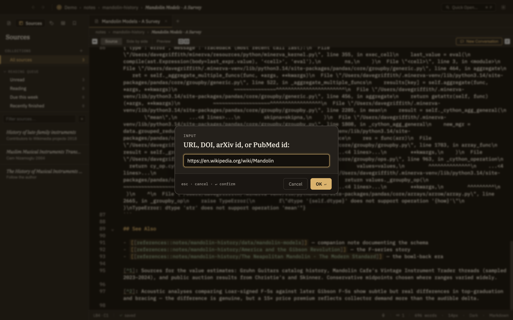

A source is any reference you want to keep alongside your notes — a web article, a research paper, a PDF on your computer. Minerva pulls in the text and citation details so you can read, cite, and think with it. There are a few ways to add one, depending on what you're starting from.
From the File menu
The File menu has a handful of dedicated actions for adding sources, each for a different starting point:
Add a web page Cmd+Shift+I
Paste in the address of an article or page. Minerva pulls in the readable text, leaving the ads and clutter behind.
Add by identifier Cmd+Shift+D
Paste a paper's DOI, arXiv id, or PubMed id and Minerva looks up its citation details for you. If a freely available PDF exists, it's fetched too; if not, the source still comes in with its details and a link to the original record so you can grab the PDF yourself.
Add a file
Pick a PDF, web page, or text file from your computer.
Import a reference library
Bring in a whole exported reference collection at once, along with any PDFs attached to its entries. When it finishes, Minerva tells you how many came in and how many were skipped as duplicates.
From the Sources panel
The quickest way to add a single source: click + in the Sources panel and paste in a web address or a paper identifier. It figures out on its own which kind of thing you pasted and handles it accordingly. It's forgiving, too — paste a sentence with an identifier buried in it ("see 10.1145/xxxx for details") and it plucks out just the identifier.

Screenshot — Adding a source from the Sources panel
By dragging a file in
You can also drag a file straight into Minerva. What happens depends on the kind of file:
A PDF
Added as a source, just like picking one from the File menu.
A note or data file
Added to your knowledge base as an ordinary file wherever you dropped it — not as a source. If the name is already taken, it's kept under a slightly different name rather than replacing what's there.
Anything else
Skipped, with a short note about why. One unsupported file won't stop the rest of a batch from coming in.
Adding the same paper twice is safe
Minerva recognizes when a source is one you already have, so re-adding the same paper simply does nothing rather than creating a duplicate. See Citing & duplicates for what happens when the same paper turns up under two different identifiers.